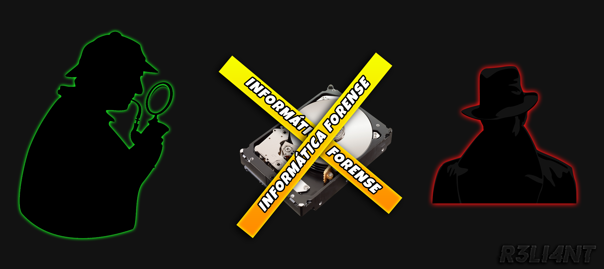

# ¿QUÉ ES LA INFORMÁTICA FORENSE?
La informática forense es una disciplina que se centra en la recopilación, preservación, análisis y presentación de pruebas electrónicas en casos legales o investigaciones relacionadas con delitos cibernéticos de manera que estas evidencias sean aceptables durante un procedimiento legal o administrativo en un juzgado. Está especialmente centrada en los delitos cometidos mediante dispositivos de computación, como redes, ordenadores y medios de almacenamiento digital.
El proceso de identificación en la investigación forense de dispositivos tecnológicos implica la búsqueda de evidencias. Antes de examinar los datos, se deben hacer copias maestras de los archivos relevantes para no alterar las pruebas. Se utilizan dispositivos especiales que permiten copiar archivos a alta velocidad, incluso aquellos cifrados. Una vez que se tienen las copias, se procede al examen de los datos, incluyendo la recuperación de datos eliminados y la apertura de archivos encriptados. Se utilizan software especializado para optimizar la búsqueda, pero estos programas suelen ser costosos y con licencias restrictivas. Después de identificar las pruebas y recopilar la información, se pasa a la preservación de las pruebas, siguiendo procedimientos legalmente aceptables si se presentarán ante un juez. Esto requiere que un perito informático siga las normas del proceso legal. La tercera etapa implica el análisis de los datos obtenidos y preservados, donde el investigador forense toma una posición dictaminante sobre los resultados. Por último, el perito defiende su peritaje ante el juzgado. En resumen, el proceso forense de dispositivos tecnológicos involucra la identificación, examen, preservación, análisis y presentación de evidencias digitales en un entorno legal.
Procesos en informática forense
-
Adquisición de pruebas: Recopilación de datos de dispositivos y sistemas sin modificarlos. Se busca preservar la integridad de las pruebas.
-
Análisis de pruebas: Examinar los datos recopilados en busca de evidencia relevante. Esto puede incluir el desciframiento de contraseñas, la recuperación de archivos eliminados y la identificación de actividades maliciosas.
-
Presentación de pruebas: La información recopilada y analizada se presenta de manera legalmente aceptable en un tribunal. Esto puede implicar la preparación de informes periciales y la participación en testimonios como testigo experto.
Tipos de informática forense
-
Sistemas Operativos: Esta rama se centra en recuperar información relevante del sistema operativo de un dispositivo. Su objetivo principal es adquirir evidencia contra ciberdelincuentes. En este proceso, se investigan los registros del sistema, archivos, registros de actividades y otros datos relacionados con la operación del sistema operativo.
-
Redes: La informática forense de redes implica recopilar, monitorear y analizar las actividades de una red con el fin de descubrir el origen de ataques, virus o violaciones de seguridad. Se utiliza para identificar tráfico sospechoso y prevenir futuros ataques a la red.
-
Dispositivos Móviles: Esta área se enfoca en recuperar evidencia digital o datos de dispositivos móviles como teléfonos inteligentes y tabletas. Los investigadores forenses de dispositivos móviles extraen información como mensajes de texto, registros de llamadas, fotos, videos y datos de aplicaciones para su uso en investigaciones legales.
-
Cloud (Nube): La informática forense en la nube implica la combinación de la computación en la nube y el análisis forense digital. Los investigadores se centran en recuperar datos almacenados en servicios en la nube, como correos electrónicos, archivos y registros de actividades, para su uso en investigaciones legales.

# AUTOPSY
Autopsy es una herramienta de código abierto ampliamente utilizada en el campo de la informática forense. A continuación le proporciono una descripción general de Autopsia y sus características clave:
-
Análisis forense de discos: Autopsy es capaz de examinar discos duros, unidades USB, tarjetas de memoria y otros dispositivos de almacenamiento para recuperar datos y realizar análisis forenses.
-
Interfaz de usuario amigable: Autopsy ofrece una interfaz gráfica de usuario que facilita la navegación y el uso de las funciones de la herramienta, lo que la hace adecuada tanto para expertos en informática forense como para personas con menos experiencia en el campo.
-
Análisis de la memoria: Puede realizar análisis de volcado de memoria, lo que le permitirá examinar la actividad del sistema en tiempo real y recuperar datos e información relevantes.
-
Generación de informes: Autopsia le permite crear informes detallados de las investigaciones forenses realizadas.
-
Soporte para casos multiusuario: Autopsia le permite trabajar en casos forenses que involucran a varios usuarios, lo que resulta útil para investigaciones más amplias.
Es importante tener en cuenta que Autopsy es una herramienta gratuita y de código abierto que la comunidad informática forense desarrolla y mejora constantemente. Se encuentra disponible tanto para Windows, Linux como MacOS
➤ Descargar: https://www.autopsy.com/download/
Para esta práctica lo primero que haremos con Autopsy es crear un nuevo caso (New Case). Seguidamente proporcionan el nombre del caso y la ruta en donde quieren que se guarde la información. En Autopsy, "single user" y "multi user" se refieren a dos modos de funcionamiento diferentes de la herramienta en lo que respecta a la colaboración entre investigadores forenses.
Usuario único (Single-User): en este modo, la autopsia se utiliza individualmente, lo que significa que un único investigador forense trabaja en un caso forense a la vez. Esto resulta útil cuando un único analista forense es responsable de una investigación y no requiere colaboración con otros investigadores.
Multiusuario (Multi-User): en el modo "Multiusuario", Autopsia permite que varios investigadores forenses colaboren en el mismo caso.
Luego nos pide que rellenemos la información solicitada (opcional), esto es útil para los investigadores forenses al momento de presentar las pruebas ante un tribunal o peritaje informático.
En la siguiente ventana nos ofrece recuperar archivos de una máquina virtual, imagen forense, partición, disco local, entre otras opciones. Si en su caso quieren recuperar información de una memoria ya sea USB, microSD o disco; eligen la segunda opción.
Después debemos de seleccionar el disco de donde quiero recuperar la información, en mi caso escogí un USB de 2GB en donde lo formateé con archivos dentro.
Autopsy ofrece varias funciones como calcular hash, identificar actividad reciente, analizar imágenes, analizar android, extraer información de máquina virtual y diferentes opciones. Photorec es una herramienta de recuperación de datos de código abierto comúnmente utilizada en el campo de la informática forense y la recuperación de datos. Puede recuperar una amplia gama de tipos de archivos, incluidas imágenes, vídeos, documentos y otros datos.
Recuperación de particiones: además de recuperar archivos individuales, Photorec también puede ayudar a recuperar particiones dañadas o perdidas, lo cual es útil en situaciones en las que se ha perdido la tabla de particiones.
Formatos de archivo admitidos: Photorec es capaz de recuperar una amplia gama de formatos de archivo, lo que lo hace útil para una variedad de tipos de datos, incluidos imágenes, documentos, archivos comprimidos y otros.
Una vez que haya terminado el análisis de recuperación, Autopsy muestra la información en forma de índice para una mejor estructura. En la categoría de "Views" > "Deleted Files" nos clasifica todos los archivos que han sido borrados.
Pueden seleccionar los archivos y extraerlos.
Como pueden observar, los archivos fueron guardados exitosamente.
Ahora bien, si quisiéramos recuperar información del disco local C de Windows debemos escoger "Logical Files".
Luego seleccionan el disco C/D o carpeta.
El contenido del disco local C en un sistema Windows puede variar significativamente de una computadora a otra. La cantidad de información almacenada en el disco local C depende de varios factores, como el uso que se le haya dado a la computadora, las aplicaciones instaladas, los archivos personales y el sistema operativo en sí. Por lo tanto, es normal que tarde en analizar y recuperar información.
En conclusión, la informática forense y la herramienta Autopsy desempeñan un papel fundamental en la investigación de delitos cibernéticos y la recuperación de datos. Proporcionan las capacidades necesarias para preservar la integridad de la evidencia digital, analizarla de manera efectiva y presentarla de manera convincente en procesos legales. Esto no quiere decir que un usuario normal no pueda hacer uso de esta herramienta, es más, si usted intenta recuperar información que perdió por accidente o intencionalmente, entonces Autopsy le será de gran ayuda.